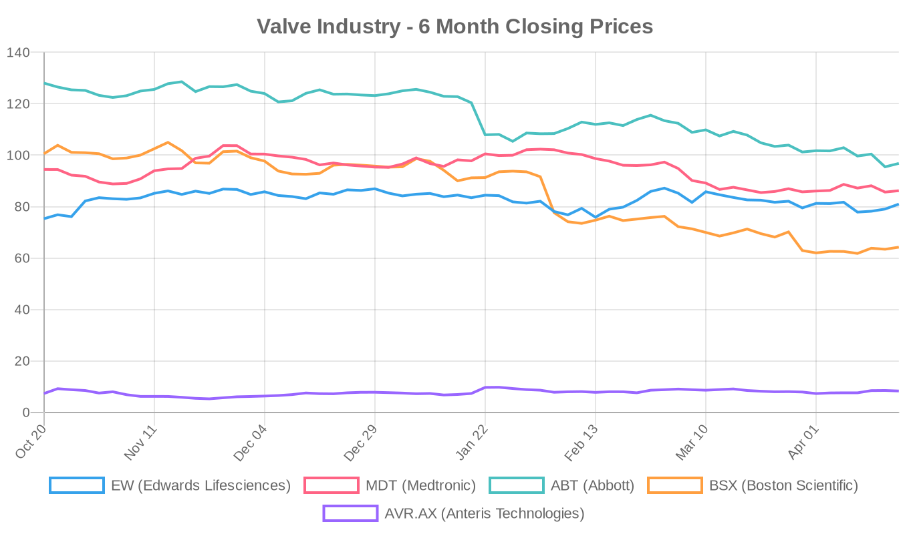
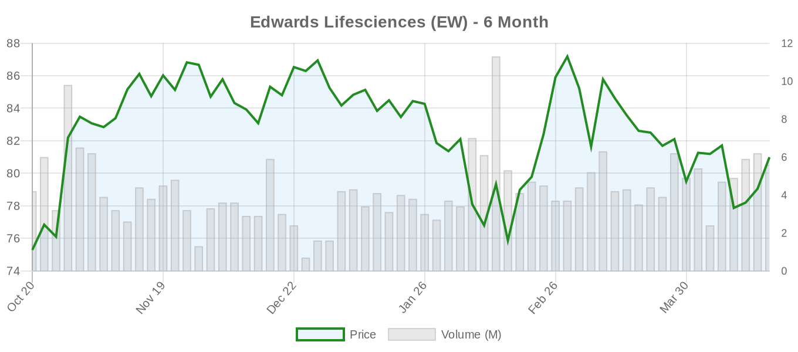
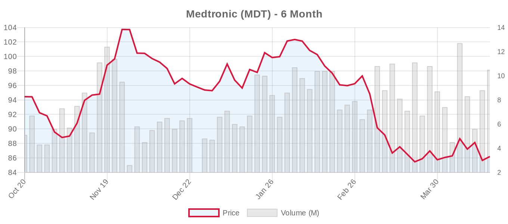
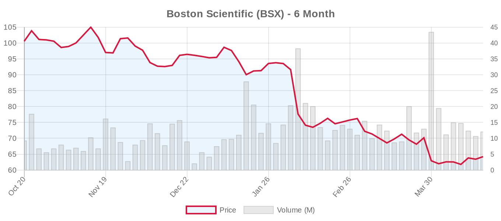
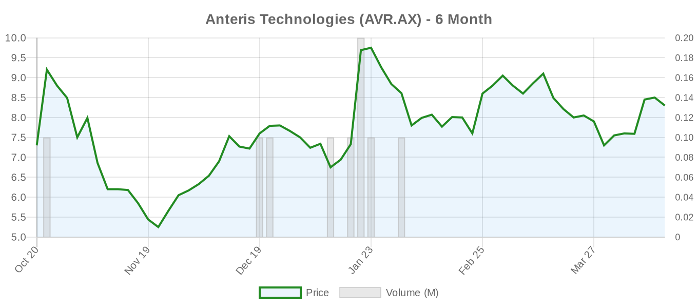

|
||||||||
|
April 20, 2026 By E. Nolan Beckett |
||||||||
|
||||||||
Executive SummaryA quiet weekend on the publication front yields no new landmark studies, but the structural heart landscape remains dynamic beneath the surface. Edwards Lifesciences sees continued institutional buying ahead of its earnings report this Wednesday — a pivotal readout for TAVR and transcatheter tricuspid volumes. Meanwhile, a first-in-human trial for a next-generation transcatheter tricuspid replacement system (TRICENTO G2) has been registered, and a novel NHLBI-sponsored trans-atrial tricuspid annuloplasty study has been suspended, underscoring the volatile early-stage development landscape in the tricuspid space. Across the market, medtech stocks posted a broadly positive session on Thursday, though most structural heart names remain well below their 6-month highs amid tariff uncertainty and macroeconomic headwinds. For the clinical audience: today's digest is a strategic briefing rather than a data day. With Edwards reporting Q1 earnings on April 23 and Boston Scientific following on April 22, this week will be the most consequential earnings cycle for structural heart in 2026 so far. We review the trial landscape, parse what institutional positioning signals tell us about market expectations, and flag two tricuspid trial updates that — while early-stage — illuminate where the next wave of innovation is headed. We also provide a comprehensive clinical trial roundup spanning all valve positions. Today's Key FindingsNo new peer-reviewed publications or preprints were identified today across PubMed, major cardiology journals, or preprint servers relevant to structural heart disease. This is typical for a weekend cycle. The next major data catalysts to watch include presentations at upcoming society meetings and the anticipated longer-term follow-up from TRILUMINATE, CLASP II TR, and TRISCEND II — all of which remain active or recruiting. Key items for today:
Tricuspid Valve (TriClip, TTVR)TRICENTO G2 First-in-Human Registered. Medira GmbH has registered a first-in-human trial (NCT07536724) for the TRICENTO G2 transcatheter valve system for tricuspid regurgitation. The study plans to enroll just 10 patients and is not yet recruiting. Details on the device design are limited, but the TRICENTO platform represents a heterotopic approach to tricuspid replacement — worth monitoring as the field rapidly evolves from the TRILUMINATE (TEER) and TRISCEND II (orthotopic replacement) paradigms. The ESC 2025 guidelines now give transcatheter tricuspid treatment a Class IIa recommendation, creating a regulatory and reimbursement runway that is attracting multiple device developers. However, the field remains early: real-world TVT Registry data show 3.1% 30-day mortality with TTVR, and questions about long-term durability, RV remodeling, and patient selection persist. TRAIPTA Study Suspended. The NHLBI-sponsored TRAIPTA study (NCT06479824) — evaluating a trans-atrial intra-pericardial tricuspid annuloplasty approach using a Cook device — has been suspended at a planned enrollment of 60 patients. The reason for suspension is not specified in the registry update. This was an early feasibility study exploring a fundamentally different approach to tricuspid annuloplasty (accessing the annulus through the pericardial space). Suspensions in early-phase device trials are not uncommon and may reflect safety signals, enrollment challenges, or device iterations. We will monitor for further updates. The TRICURE EU Pivotal Study (NCT06581471), sponsored by TRiCares, also continues recruiting (n=80) for another transcatheter tricuspid valve replacement system. The tricuspid replacement space is becoming increasingly crowded, with Edwards' EVOQUE, Medtronic's Intrepid platform (primarily mitral, with tricuspid ambitions), and multiple smaller players vying for position. The fundamental question remains: will TEER (TriClip, PASCAL) or replacement dominate long-term? The TRISCEND II data favored replacement for symptom improvement but at the cost of higher bleeding and pacemaker rates — a tradeoff familiar from the aortic space. Aortic Valve (TAVR/TAVI)No new publications today, but several active trial updates merit attention: The COMFORT Study (NCT05779787) at Niguarda Hospital continues recruiting 100 patients to evaluate coronary re-engagement after random versus aligned TAVR valve deployment. This addresses a critical lifetime management question emphasized in the ESC 2025 guidelines: commissural alignment at index TAVR directly impacts future coronary access and valve-in-valve feasibility. For patients with life expectancy exceeding assumed valve durability, this is not an academic exercise — it is a practical determinant of reintervention options. The INFLATE Study (NCT06816485), sponsored by Biosensors Europe, is recruiting 93 patients to assess a novel PTV (percutaneous transcatheter valvuloplasty) balloon during TAVI for severe aortic stenosis. While balloon aortic valvuloplasty is a mature technique, device-specific iterations continue to target improved safety and performance profiles. Two additional studies address important peri-procedural questions: a dexmedetomidine sedation trial (NCT07532733) from Erasme University Hospital (n=80) comparing conscious sedation approaches during TAVI, and a left bundle branch area pacing trial (NCT07236489) from Nantes University Hospital (n=266) evaluating LBBAP versus conventional pacing for post-TAVI AV block. The conduction disturbance question remains one of TAVR's most significant limitations — new-onset pacemaker rates in contemporary series range from 10-20% depending on valve platform, and evidence increasingly links chronic RV pacing to adverse LV remodeling. A pharmacological prevention trial (NCT07519161) from Shanghai East Hospital will randomize 198 patients to metoprolol versus amiodarone for prevention of new-onset atrial fibrillation after TAVR — another underappreciated post-procedural complication with implications for stroke risk and anticoagulation management. The SAPIEN 3 in Bicuspid Type 0 AS study (NCT07450196) from Fuwai Hospital plans to enroll 170 patients. This is noteworthy: Type 0 (true bicuspid) valves are the most challenging BAV morphology for TAVR, and both the ACC/AHA 2020 and ESC 2025 guidelines rate TAVI for BAV as Class IIb. Prospective data in this specific subgroup are sorely needed, though a 170-patient observational study without a surgical comparator will have inherent limitations. Finally, the ARTIST Trial (NCT06608823) — JenaValve's pivotal study comparing the Trilogy transcatheter heart valve to SAVR for aortic regurgitation — continues recruiting toward its 1,016-patient target. This is a uniquely important trial: pure aortic regurgitation remains predominantly surgical territory (ESC 2025: TAVI for AR is Class IIb, inoperable patients only). A favorable ARTIST result could meaningfully expand transcatheter indications into AR — but the bar is high, and the guideline committees will rightly demand rigorous long-term data before changing practice. Mitral Valve (MitraClip, PASCAL, TMVR)No new publications today. Key trial updates in the mitral space: The Edwards EVOQUE Eos MISCEND Study (NCT02718001) is now active but no longer recruiting (n=123), evaluating transcatheter mitral valve replacement with the EVOQUE Eos system. TMVR remains a challenging frontier — the mitral annulus is anatomically complex, and previous attempts (Tendyne, Intrepid) have faced significant hurdles with paravalvular leak, LVOT obstruction, and access-related complications. The Intrepid TMVR Pivotal Trial (NCT03242642), Medtronic's flagship mitral replacement study, continues recruiting toward an ambitious 1,056-patient enrollment. This trial is critical for determining whether TMVR can complement or potentially challenge TEER in selected patient populations. A novel 3D echocardiographic MR quantification study (NCT07528781) from Germans Trias i Pujol Hospital is recruiting 200 patients to evaluate AI-based software for analyzing 3D transesophageal echocardiography data. Accurate MR quantification remains a fundamental challenge — the COAPT vs. MITRA-FR discrepancy was partly attributable to differences in MR severity assessment, and standardized, reproducible imaging is essential for appropriate patient selection. Device & TechnologyThe NHLBI-Emory Advanced Cardiac CT Reconstruction study (NCT05372627) has been updated but remains in not-yet-recruiting status at a planned enrollment of 1,000 patients. Advanced CT reconstruction techniques are increasingly relevant for structural heart planning — the ESC 2025 guidelines emphasize CT-based anatomical analysis at the index TAVR procedure for lifetime management planning, including assessment of coronary obstruction risk, sinus sequestration, and valve-in-valve feasibility. The Abbott Structural Heart Device Registry (NCT06590467) continues enrolling (n=2,500), covering both Amplatzer occlusion devices and Epic surgical tissue heart valves — a broad post-market surveillance effort that will generate real-world data across Abbott's structural heart portfolio. Industry & MarketInstitutional Positioning Ahead of Edwards Earnings. Two institutional investment moves were reported over the weekend: Mirae Asset Global Investments increased its holdings in Edwards Lifesciences, and Lecap Asset Management initiated a $1.07 million position in EW. While individual institutional trades should not be over-interpreted, the pattern of buying ahead of Wednesday's earnings report suggests some institutional confidence in the TAVR growth narrative — or at least a view that current valuation (forward P/E 24.4x) has priced in sufficient downside risk. The broader structural heart competitive landscape continues to evolve. Edwards dominates TAVR (SAPIEN platform) and is building its transcatheter tricuspid franchise (EVOQUE/TRISCEND II) and TMVR platform (EVOQUE Eos/MISCEND). Abbott holds the TEER leadership position with TriClip (tricuspid) and MitraClip (mitral), now bolstered by the ESC 2025 Class I recommendation for TEER in ventricular SMR. Medtronic is pursuing both TAVR (Evolut) and TMVR (Intrepid), while Boston Scientific has expanded its structural heart footprint through the ACURATE neo2 and WATCHMAN platforms. JenaValve (private) is carving a distinctive niche with the Trilogy system targeting aortic regurgitation — a space where no current transcatheter device has guideline-level endorsement. Financial AnalysisThis is a defining week for structural heart equities. Edwards Lifesciences reports Wednesday (April 23) and Boston Scientific reports Tuesday (April 22), making the next 72 hours the most consequential earnings window of the quarter for the sector. The market context is challenging: tariff uncertainty, macroeconomic softness, and lingering questions about procedure volume recovery have weighed on medtech broadly. Edwards trades 19% below analyst consensus targets, Boston Scientific trades 50% below consensus, and Abbott sits 24% below its target — suggesting either significant analyst optimism or meaningful discounting of near-term headwinds. Edwards' earnings call will be scrutinized for three key data points: (1) global TAVR procedure volumes and pricing trends, particularly any commentary on the impact of the ESC 2025 guideline shift favoring TAVI at age ≥70; (2) TMVR and transcatheter tricuspid pipeline progress, including EVOQUE Eos enrollment and any TRISCEND II updates; and (3) forward guidance in the context of tariff exposure (Edwards manufactures in both the US and internationally). Boston Scientific's call will be watched for WATCHMAN volumes and any structural heart commentary, though BSX's structural heart exposure is smaller than its electrophysiology and cardiovascular interventions franchises. From a sector perspective, the multiple institutional buys in Edwards ahead of earnings are notable but not conclusive. The stock has recovered 7.6% over 6 months but remains range-bound between $74 and $88. A strong TAVR volume print could catalyze a move toward the analyst target of $96. Conversely, any hint of procedure volume deceleration or competitive pressure from Medtronic's Evolut platform could send shares back toward recent lows. The forward P/E of 24.4x is reasonable by Edwards' historical standards but demands execution. Valve Industry Stocks Edwards Lifesciences (EW)
Commentary: Edwards posted a solid 2.45% gain Thursday, continuing its recovery from April lows. The stock is trading in the middle of its 6-month range. Institutional buying from Mirae Asset and Lecap Asset Management signals positioning ahead of Wednesday's report. Key catalysts: TAVR volume trends (particularly in Europe following ESC 2025 guideline expansion), SAPIEN 3 Ultra/SAPIEN X4 adoption, and pipeline updates on EVOQUE (tricuspid) and EVOQUE Eos (mitral). The SAPIEN 3 Ultra PMCF study (NCT04555967) is active but no longer recruiting. The forward P/E of 24.4x is below Edwards' 5-year average, suggesting the market has partially de-rated the stock — either a buying opportunity or appropriate skepticism about growth deceleration. Watch for commentary on tariff impacts and international pricing dynamics. Medtronic (MDT)
Commentary: Medtronic has underperformed the broader medtech sector over 6 months, declining nearly 9%. The structural heart business (Evolut TAVR platform, Intrepid TMVR) is a relatively small but strategically important segment. The Evolut Low Risk trial (NCT02701283) remains in active long-term follow-up (n=2,223), providing critical durability data that will inform the next ACC/AHA guideline update. The Intrepid TMVR pivotal trial (NCT03242642) is still recruiting toward 1,056 patients — a program that, if successful, could significantly expand Medtronic's structural heart TAM. At a forward P/E of 14.2x, the diversified conglomerate discount is evident. Earnings not until June 3. Abbott Laboratories (ABT)
Commentary: Abbott has been the worst performer among major structural heart names over 6 months, falling nearly 25% — driven by broader headwinds rather than structural heart-specific concerns. The structural heart franchise includes MitraClip (now bolstered by ESC 2025 Class I for SMR TEER), TriClip (TRILUMINATE Pivotal, NCT03904147, active/not recruiting), and the Epic surgical valve. The COAPT long-term follow-up (NCT03706833) continues under Edwards sponsorship but includes Abbott MitraClip data. REPAIR-MR (NCT04198870) — the landmark MitraClip vs. surgery trial for primary MR — is active but no longer recruiting (n=500). At $96.81, ABT trades just above its 52-week low, which may represent compelling value if structural heart volumes remain robust. However, tariff exposure and diagnostics headwinds may continue to weigh on sentiment. Boston Scientific (BSX)
Commentary: Boston Scientific has suffered the steepest decline of the group, dropping 36% over 6 months — remarkable for a company that carried a "strong buy" consensus. The CLASP II TR pivotal trial (NCT04097145) for PASCAL in tricuspid regurgitation continues recruiting (n=870), representing BSX's most significant structural heart catalyst beyond WATCHMAN. Earnings Tuesday will be critical: the 50% gap between current price and analyst consensus target is unsustainable — either estimates come down or the stock needs to meaningfully re-rate. Watch for structural heart procedure volume commentary and any PASCAL/ACURATE pipeline updates. Anteris Technologies (AVR.AX)
Commentary: Anteris, developer of the DurAVR transcatheter aortic valve using single-piece 3D-shaped tissue technology, has outperformed the larger players over 6 months (+13.7%) but remains a speculative, pre-revenue play. The company's ADAPT tissue technology aims to improve valve durability — a critical unmet need as TAVI expands to younger patients where the ESC 2025 guidelines explicitly flag durability concerns beyond 10 years. Ultra-thin trading volume (2,954 shares) means price movements should be interpreted cautiously. Private Companies to Watch: JenaValve Technology (Trilogy THV for aortic regurgitation — ARTIST trial recruiting, n=1,016), Meril Life Sciences (Myval balloon-expandable TAVR), and J Valve Technology remain private and are not publicly traded. JenaValve's ARTIST trial is perhaps the most strategically significant among these, as it could establish the first transcatheter therapy with strong evidence in pure aortic regurgitation. Market Outlook: The structural heart sector faces a paradox: clinical evidence has never been stronger (ESC 2025 expanded TAVI, TEER, and transcatheter tricuspid indications), yet stock performance has been broadly negative amid macroeconomic headwinds. The valuation compression creates potential opportunity for long-term investors if procedure volumes continue growing — but the next 48-72 hours of earnings will test whether the growth narrative holds. The ESC 2025 guideline shift favoring TAVI at ≥70 years could unlock meaningful European volume growth, but this will take quarters to materialize in financial results. Meanwhile, the tricuspid space remains the sector's highest-growth frontier, with multiple devices competing across both repair and replacement paradigms. Clinical Trial UpdatesAortic Valve
Mitral Valve — Repair (TEER)
Mitral Valve — Replacement (TMVR)
Tricuspid Valve — Repair
Tricuspid Valve — Replacement
Other / Imaging
Looking AheadThis week is all about earnings. Boston Scientific reports Tuesday and Edwards Lifesciences reports Wednesday — two readouts that will set the tone for structural heart equities through the summer. Beyond the financials, watch for pipeline commentary on TEER expansion, tricuspid device adoption, and TMVR enrollment trends. On the clinical side, the structural heart community continues to digest the implications of the ESC 2025 guidelines, particularly the expanded age threshold for TAVI and the Class I TEER upgrade for secondary MR — changes that will reshape referral patterns, Heart Team discussions, and procedural volumes for years to come. Stay skeptical, stay curious, and stay tuned. — E. Nolan Beckett | The Valve Wire |
||||||||
|
|
||||||||
|
||||||||
|